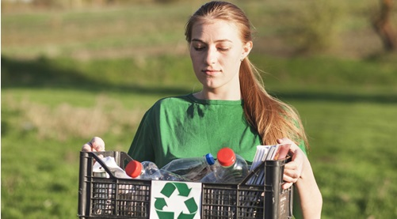
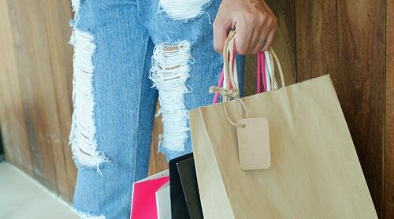

Recycling Tips on Household Waste
Your home is where you treasure the most valuable things in life. And there's nothing more putting-off than having your home cluttered with unused items that take away its charm. However, you can always adopt a recycling habit to spruce up your living space.
Here are 4 easy recycling techniques to practice and give a refreshing touch to your home
Plastic Water Bottles
Plastic water bottles are the worst enemy one can have indoors. People often dispose of plastic bottles irresponsibly after use and thus harm the environment. With a little use of creativity, plastic bottles can come to good use.
For instance, you can cut off the bottom halves of the plastic bottles and plant seedlings in them. These nifty plant-holders are easy to craft and will be a great addition to your garden space.

Aluminium Foil
Aluminum foil has various uses in our daily lives and can be handy at times. However, their disadvantage, like that of unused plastic items, is that they are non-biodegradable.
There are ways to upcycle and reuse aluminum foil, rather than disposing it off after one use - you can place the foil behind plants in the shade and use the foil as a reflector.
Recycling Tip
Build an Eco-brick
Building an eco-brick is a creative and practical way to reuse non-recyclable plastic waste. By tightly packing clean, dry plastic into a plastic bottle, you can create a strong, reusable building block that helps reduce landfill waste
Thousands of plastic bottles end up lying in landfills every year as they can only be recycled a finite number of times. So rather than just throwing them away, you can use them to make nifty eco-bricks. These bricks can be used for making modular furniture, as a decorative item for your garden and a paperweight to name a few..

Reuse Your Home Delivered Newspaper
If you're one of those people who gets their newspaper delivered regularly then this recycling technique is the best fit for you. Instead of stocking up on your old newspapers, you can use them as packing paper to wrap up your fragile items or gifts.
You can also use a newspaper as a cleaning aid by mixing water and a splash of white vinegar to clean your window stains, effortlessly